● 생애
백남주는 유명화의 신비주의 영향을 받아 원산에 신학산이라는 기도소를 설립하고,
김성도와 함께 성주 교단을 세웠다. 그는 김백문의 스승으로, 소위 신비주의 교파로
불리는 여러 소종파에 영향을 미쳤다.
연혁
한국 삼시대론의 원조 / 백남주(1901-1949)
● 생애
백남주는 유명화의 신비주의 영향을 받아 원산에 신학산이라는 기도소를 설립하고,
김성도와 함께 성주 교단을 세웠다. 그는 김백문의 스승으로, 소위 신비주의 교파로
불리는 여러 소종파에 영향을 미쳤다.
함경남도 갑산 출신으로, 조선예수교회의 창설자 중 한 사람이다. 어릴 때부터 단군
신앙을 숭상하다가 20대에 기독교에 입교했다. 평양신학교에 입학하여 그리스어와
히브리어에 재능을 발휘했고, 1930년 졸업 당시 개교 이래 가장 우수한 원전학자로
인정받았다. 졸업 후 곧바로 원산의 마르다윌슨 여자신학교에 부임해 그리스어와
히브리어 및 요한복음 강의로 명성을 얻었다.
백남주는 사도 바울보다 요한의 신비에 더 호감을 가졌고, 스웨덴의 신비주의 사상
가인 스웨덴보르그(Emanuel Swedenborg)의 사상에 심취했다. 그는 기성 교회의
부패와 경직성을 비판하고 혁신을 부르짖는 신앙부흥운동에 동참했다.
주장
한국 삼시대론의 원조 / 백남주(1901-1949)
● 신비주의 체계화의 과정
유명화의 신비주의 영향을 받아 원산 광석동에 신학산(神學山)이라는 기도소를 설립했다.
그는 『그리스도를 본받아서』, 『수색교회참회록』, 『요한복음』 등을 새로 번역하여 강해했다.
1929년부터 예수가 직접 친림하였다는 유명화가 원산 지방에 영향력을 행사하였는데, 백남
주도 여기에 깊이 관련되었다. 그는 유명화의 기도회에서 '대언'을 받고, 1933년에는 스웨덴
보르그의 사상에 영향을 받아 『새 생명의 길』이라는 소책자를 펴냈다. 이 책에서 제1시대는
구약, 제2시대는 신약, 제3시대는 '새 생명의 길' 시대로 구분하였으나, 성경의 진리에 어긋난
다는 이유로 많은 논란을 일으켰다.
1933년, 백남주와 한준명을 중심으로 원산에 신학산 기도소를 세웠다. 그러나 1934년에는
천국 결혼을 빙자해 여신학생을 임신시켰다. 또한 하나님을 빙자해 부인에게 40일간 금식하라
는 명령을 내려 부인은 한 달 만에 사망했고, 2개월 뒤 여신학생과 결혼하여 딸을 출산했다.
이러한 사건들로 인해 그는 원산 신학산에서 나오게 되었다.
1935년, 백남주는 평안북도 철산에서 자칭 '새 주님'이라는 여권사 김성도와 함께 성주교단을
세웠다. 그러나 이 교단은 혼음 사건(混淫事件)으로 또 한 번 물의를 빚었다. 그 결과, 장로교
평양노회에서는 그를 이단으로 단정하였다.
● 백남주가 끼친 영향
백남주의 '구약, 신약, 새생명의길 시대'과 같은 3시대의 구분은 김백문의 구약, 신약, 성약
으로 이어지면서 후대 교파들에 영향을 미쳤다고 평가 받는다.